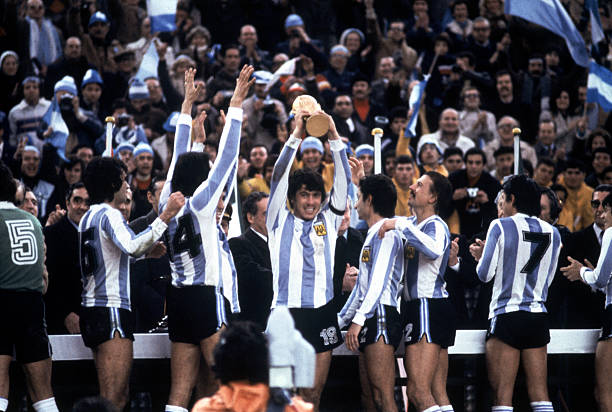
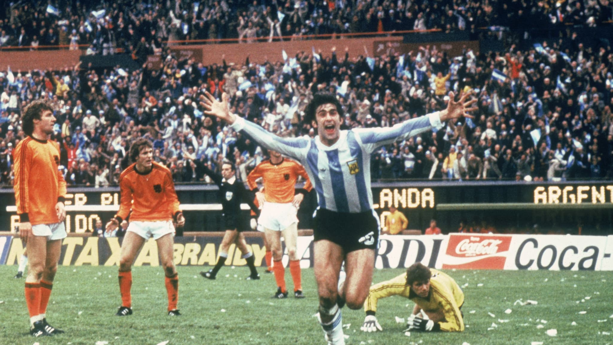

Es una antigua costumbre celebrar y hacer el reconocimiento de las grandes gestas cuando se cumplen años "redondos" de aniversarios. 10, 20, 25, 50, 100... Tal vez, porque tienen el color de la memoria fija. O porque sí. En tiempos de esta lenta y eterna cuarentena hay espacio para celebrar los recuerdos sin tanta precisión matemática. Si se rememora el primer título Mundial del fútbol argentino, a los 42 años de haberse logrado, un 25 de junio de 1978 -un día después del nacimiento de Juan Román Riquelme, fútbol puro-, la tentación es asociarlo con la cruel dictadura que envolvía a la Argentina esa época. Porque era simultánea, claro. Y cuesta separar los episodios aislados que no tuvieran que ver con la mancha que significó esa masacre que enlutó para siempre a la sociedad argentina.
Que la dictadura los aprovechó para hacer su propaganda macabra, no hay dudas. Mucho más porque la Copa se jugaba en nuestro país. Pero la intención aquí es exponer simplemente los conceptos futboleros que tras la asunción de César Menotti, en 1974, en pleno gobierno peronista, le dieron un giro radical a la Selección argentina, sacudida, desordenada, después del sorpresivo fracaso en el Mundial de Suecia, 16 años antes.
Argentina no había participado en los Mundiales anteriores, y en los tiempos de la Segunda Guerra, cuando no se jugaban, el supuesto esplendor del juego doméstico no se había probado con los atléticos europeos de entonces. Entró la confusión, entonces. Copiarles todo a ellos. Mal. Hasta que Menotti explicó que si los europeos venían ya a buscar la técnica de nuestros jugadores (Grillo, Maschio, Angelillo, Sivori, Cucchiaroni) sólo debíamos imitarles la organización y la preparación física. "Y volver a la fuente de nuestro estilo forjado en los años 30 y 40".
Y así comenzó la larga preparación pare ese Mundial 78. Y el resultado fue un equipo de enorme jerarquía con jugadores del torneo local y reforzado especialmente con Mario Kempes, quién había pasado de Rosario Central al Valencia de España y era estrella superlativa en esa Liga. Daniel Passarella pasó a ser capitán a los 23 años. Y formaba pareja central con el cordobés Luis Galván. Por los costados alternaban Carrascosa, el primer capitán -luego dejó el plantel por propia voluntad-, Bottaniz y un juvenil Alberto Tarantini. Gallego era el eje equilibrista en el medio, Ardiles, otro cordobés, el motor por la derecha. El habilidoso Valencia, curiosamente también cordobés. René Houseman (un émulo del fenómeno Garrincha), Leopoldo Luque y Oscar Ortiz. También alternaban Daniel Bertoni, Omar Larrosa, el Beto Alonso y Jorge Olguín, al final lateral por la derecha; todos respaldados primero por Hugo Gatti y luego por el invencible Pato Fillol.
Mientras se esperaba a Kempes, en 1977 se hizo una gran cantidad de partidos preparatorios en la Bombonera con equipos europeos de todo calibre. Diego Maradona, el genio que asomaba, tuvo un debut fulminante en una goleada ante Hungría (5 a 1) en febrero de 1977. Tenía 16 años.
Cuando llegó el momento de elegir los 22 mundialistas, Menotti tenía 25 jugadores concentrados. Había que resignar tres nombres. Fueron Bravo, Bottaniz y...Maradona, ya con 17 años. Quedaron como una estampita aquellas lágrimas de Diego en la concentración de Natalio Salvattori. Ubicados en la época, no había dudas que el puesto de titular era para Mario Kempes, al cabo goleador y figura del campeón. Pero quizás, un lugar en el plantel pudo haber tenido Diego... Lo concreto fue que su salida no causó conmoción entonces. Y con el equipo campeón no hubo acusaciones. Maradona tuvo su revancha en el Mundial Juvenil de 1979, campeón en Japón.
Menotti tenía su idea clara. Y el sorteo clasificatorio resultó adverso, más allá de las especulaciones: Hungría, Francia e Italia en la primera ronda. Nada menos. La derrota con Italia obligó a viajar a Rosario para un segundo cuadrangular con Polonia (2-0), Brasil (0-0) y Perú (6-0). Para llegar a la final contra Holanda, el subcampeón de 1974. Y fue victoria 3-1 en tiempo suplementario con dos goles de Kempes y uno de Bertoni.
Aquella goleada contra Perú fue el centro de todas las suspicacias. Argentina debía ganar al menos por 4 goles para asegurarse un lugar en la gran final. Volaron todo tipo de versiones para desvirtuar esa victoria. Con buena o con mala fe. Lo concreto es que en marzo de ese año 78 Argentina y Perú habían jugado dos amistosos por la Copa Mariscal Castilla. En la Boca ganó Argentina 2-1 con goles de Houseman y Pagnanini, y en Lima 3-1. Con un contundente 3-0 en el primer tiempo (goles de Luque. Houseman y Passarella) donde este cronista -presente- puede dar fe que si seguía a fondo el equipo titular (hubo varios cambios) la goleada habría sido mayor. Y vale aclarar que todavía no estaba Mario Kempes en el equipo.
Aquel equipo y aquella consagración marcaron la reivindicación del fútbol argentino tras muchos años de desorden. Y suena injusto involucrar su éxito futbolero con la despreciable dictadura que detentaba el poder en la Argentina.